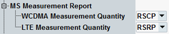

MS Measurement Report Settings
This section configures the MS measurement report. The report is shown in the main signaling view, see "MS Measurement Report".
For enabling of neighbor cell measurements, see "Neighbor Cell Settings".

MS measurement report settings
Selects whether the MS has to determine the RSCP or the Ec/No during WCDMA neighbor cell measurements. The setting is signaled to the MS.
Remote command:Selects whether the MS has to determine the RSRP or the RSRQ during LTE neighbor cell measurements. The setting is signaled to the MS.
Remote command: